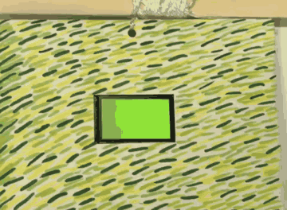
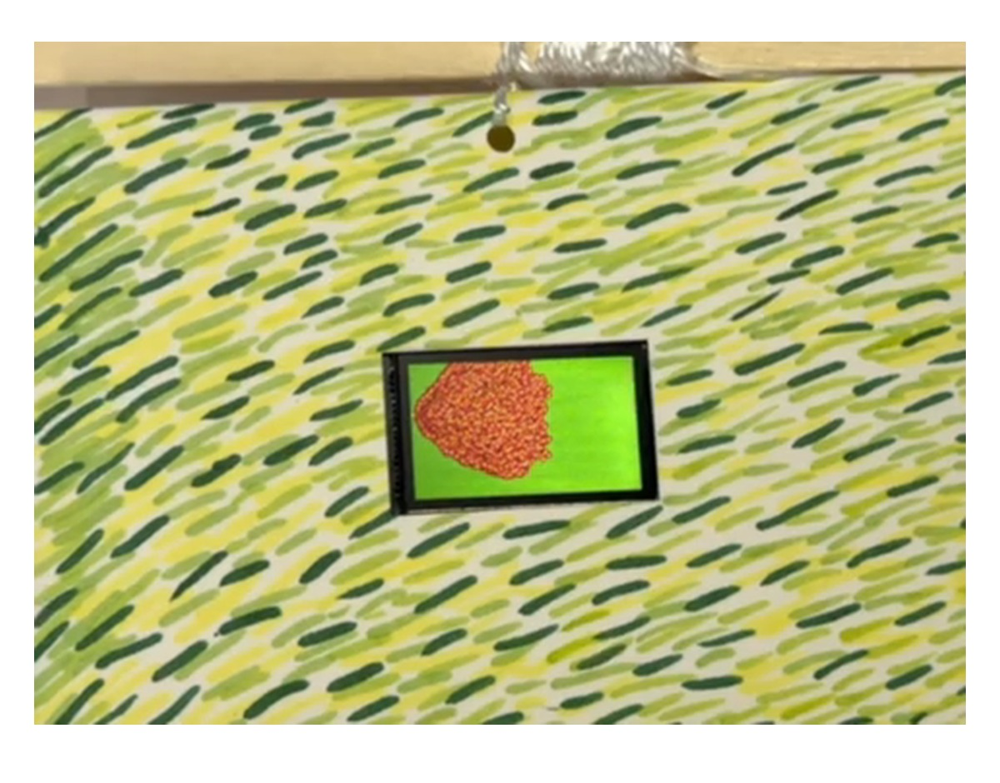

PROJECT 01 · GENERATIVE ART · 2026
Fire on Grass
A single digital spark spreads across a hand-painted field, growing from a tiny flame into a prairie fire.

The full cycle, accelerated: one spark gradually fills the 240 × 135 display.
01 / ARTISTIC VISION
From one spark to a field of fire.
My inspiration came from the Chinese saying “星星之火，可以燎原,” which means “A single spark can start a prairie fire.” It is a phrase I have always loved because it gives enormous power to a beginning that looks almost insignificant.
I translated that idea into a simple visual transformation. The screen begins as an open green field with one small orange spark near its left edge. That point creates another point, then another, until the marks gather into a dense, moving mass of red, orange, yellow, and maroon.
I wanted the digital object to feel connected to a larger physical landscape. I installed the small display inside a hand-painted grass field, using short green and yellow brushstrokes that echo the screen background. The device becomes a window where the calm field changes into something energetic and uncontrollable.

The screen is embedded in a field of painted marks so the digital and physical greens read as one landscape.
02 / DESIGN DECISIONS
Building a readable transformation.
Give the fire a direction
Each new cell moves one to four pixels to the right and a small random distance vertically. This bias lets viewers follow the growth from the original spark.
Layer color and geometry
A maroon circle forms the body, an orange line joins parent and child, and a red circle with a yellow center suggests heat.
Let chance shape every cycle
The propagation rule stays constant, but random sampling changes the outline and density each time.
Reset before total coverage
At 85% coverage, the screen clears, pauses, and returns to one spark, giving the installation a repeating rhythm.
03 / TECHNICAL PROCESS
Turning spread into a system.
I represented the display as a bool fire[135][240] grid. A cell is either untouched or burning. The loop samples random positions; when it finds a burning cell, it attempts to create a nearby cell. This preserves the history of the spread without an external image file.
Keeping the fire on screen
Random vertical movement can produce negative coordinates near the top edge or values beyond the bottom edge. I used constrain() on both coordinates before accessing the array. This prevented invalid memory access and kept every mark on the 240 × 135 display.
Balancing speed and density
Sampling the grid only once per frame would make growth intermittent because most cells are empty. Running 5,000 attempts per loop gives the flame enough chances to find active cells, while a 150 ms pause keeps the accumulation visible.
Making the installation repeat
The variable burned tracks ignited cells. At 85% coverage, the program clears the TFT and Boolean array, waits one second, and replants the original spark, allowing it to run unattended.
04 / FULL VIDEO
Watch the installation.
CODE + REPLICATION GUIDE
Build your own version.
The GitHub repository contains the Arduino sketch, requirements, installation steps, troubleshooting notes, demonstration GIF, and original video.
Open GitHub repository ↗